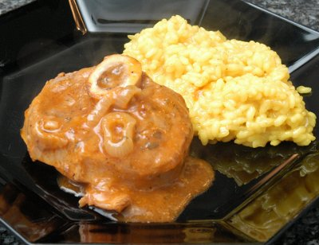

| Zutaten für 4 Personen: | |
| 4 | Kalbshaxen |
| 1 | Zwiebel |
| Mehl | |
| 80 g | Butter |
| 1 dl | trockener Weisswein |
| 1 Tl | Tomatenmark |
| Salz | |
| Pfeffer | |
| Petersilie | |
| Schale einer halben Zitrone | |
| 2 | Sardellenfilets |
Zwiebel in Ringe schneiden.
Wein mit Tomatenmark vermischen.
Kalbshaxenstücke mit Mehl bestäuben.
Butter in Pfanne erhitzen und Zwiebelringe hellbraun anbraten, dann herausnehmen.
Fleisch kurz auf allen Seiten anbraten.
Zwiebeln wieder beifügen und das mit dem Wein vermischte Tomatenmark darüber träufeln. Mit Salz und Pfeffer würzen.
Zugedeckt auf schwachem Feuer ca. 1.5 Stunden schmoren lassen.
Zitronenschale, Petersilie und Sardellen ganz fein zerhacken, der Sauce beigeben und gut vermischen und nochmals 10 Minuten ziehen lassen.
Beilagen: Risotto Milanese.
Flugblatt vom Bell
Hervorragend! Ich habe für nur 1 Person gekocht und die Haxe im Dampfkochtopf mit Zwei Ringen während 25 Minuten gekocht. Wurde super! Einzig der Wein mit dem Tomatenpüree wird natürlich nicht so sämig ohne die Verdunstung. Ich muss also etwas mehr Mehl verwenden und weniger Flüssigkeit. Richard Eigenmann, 5.6.2000
Gelang auch am 6.5.2010 ganz toll. Habe es diesmal ohne Dampfkochtopf gemacht und die Sauce wurde wunderbar. RE
@LINKBACK_TAG@ @WAKELOCK@